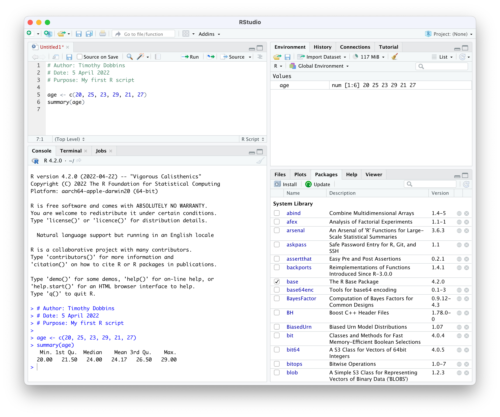
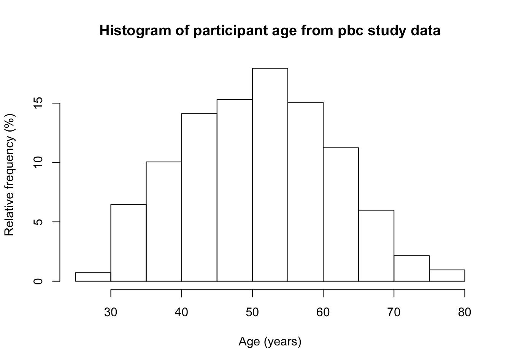

Module 1 Introduction to R and RStudio
INCLUDE:
decide on skim vs summary vs jmv::describe
how to get help (online, google, etc)
don’t give up!
tidyverse?
Learning outcomes
By the end of this Module, you will be able to:
- understand the difference between R and RStudio
- navigate the RStudio interface
- input and import data into R
- use R to summarise data
- perform basic data transformations
- understand the difference between saving R data and saving R output
- copy R output to a standard word processing package
Part 1: An introduction to R
“R is a language and environment for statistical computing and graphics.” Link. It is an open-source programming language, used mainly for statistics (including biostatistics) and data science.
The aim of these notes is to introduce the R language within the RStudio environment, and to introduce the commands and procedures that are directly relevant to this course. There is so much more to R than we can cover in these notes. Relevant information will be provided throughout the course, and we will provide further references that you can explore if you are interested.
1.1 R vs RStudio
At its heart, R is a programming language. When you install R on your computer, you are installing the language and its resources, as well as a very basic interface for using R. You can write and run R code using the basic R app, but we don’t recommend it.
RStudio is an “Integrated Development Environment” that runs R while also providing useful tools to help you as you’re writing code and analysing data. You can think of R as an engine which does the work, and RStudio as a car that uses the engine, but also provides useful tools to help you drive.
| R: Don’t use this | RStudio: Use this instead |
|---|---|
 |
1.2 Installing R and RSudio
1.2.1 To install R on your computer
- Download the R installer from:
- for Windows: https://cran.r-project.org/bin/windows/base/
- for MacOS: https://cran.r-project.org/bin/macosx/
- Install R by running the installer and following the installation instructions. The default settings are fine.
- Note for macOS: if you are running macOS 10.8 or later, you will need to install an additional application called XQuartz, which is available at https://www.xquartz.org/. Download the latest installer (XQuartz-2.8.1.dmg as of April 2022), and install it in the usual way.
- Open the R program. You should see a screen as below:

Near the bottom of the R screen, you will find the “>” symbol which represents the command line. If you type 1 + 2 into the command line and then hit enter you should get:
[1] 3
This is R performing your calculation, with the [1] indicating that the solution to 1 + 2 is a single number (the number 3).
At this point, close R - we will not interact with R like this in the future. You can close R by typing quit() at the command prompt, followed by the return key, or in the usual way of closing an application in your operating system. There is no need to save anything here if prompted.
1.2.2 To install RStudio on your computer
- Make sure you have already installed R, and verified that it is working.
- Download the RStudio desktop installer at: https://www.rstudio.com/products/rstudio/download. Ensure that you select the RStudio Desktop (Free) installer in the first column.
- Install RStudio by running the installer and following the installation instructions. The default settings are fine.
- Open RStudio, which will appear as below:

Locate the command line symbol “>” at the bottom of the left-hand panel. Type 1 + 2 into the command line and hit enter, and you will see:
[1] 3
This confirms that RStudio is running correctly, and can use the R language to correctly calculate the sum between 1 and 2!
RStudio currently comprises three window panes, and we will discuss these later.
1.3 A simple R analysis
In this very brief section, we will introduce R by calculating the average of six ages.
To begin, open a new R Script by choosing File > New file > R Script . A script (or a program) is a collection of commands that are sequentially processed by R. You can also type Ctrl+Shift+N in Windows, or Command+Shift+N in MacOS to open a new script in RStudio, or click the New File button at the top of the RStudio window.
You should now see four window panes, as below. In the top-left window, type the following (replacing my name with yours, and including today’s date):
# Author: Timothy Dobbins
# Date: 5 April 2022
# Purpose: My first R script
age <- c(20, 25, 23, 29, 21, 27)
summary(age)Note: R is case-sensitive, so you should enter the text exactly as written in these notes.
Your screen should look something like:

To run your script, choose Code > Run Region > Run All. You will see your code appear in the bottom-right window, with the following output:
> # Author: Timothy Dobbins
> # Date: 5 April 2022
> # Purpose: My first R script
>
> age <- c(20, 25, 23, 29, 21, 27)
> summary(age)
Min. 1st Qu. Median Mean 3rd Qu. Max.
20.00 21.50 24.00 24.17 26.50 29.00 We will explain the key parts of this script later, but for now, you have entered six ages and calculated the mean age (along with five other summary statistics).
1.4 The RStudio environment
Now that we have seen a simple example of how to use R within RStudio, let’s describe the RStudio environment. Let’s assume that you have just run your first R script, and you have four windows as below:

The Source window is where you will write and edit your R scripts. Your scripts can be saved by clicking File > Save As or by clicking on the symbol of a floppy disk at the top of the script. The file will have an extension of .R, for example script.R. Give it a meaningful title and remember to periodically save as you go.
In RStudio, the name of the script will be black when it has been saved, and will change to red if you have any unsaved changes.
The Console window, at the bottom left, contains the command line which is indicated with the symbol >. You can type commands here, but anything executed directly from the console is not saved and therefore is lost when the session ends (when you exit RStudio). You should always run your commands from a script file which you can save and use again later. When you run commands from a script, the output and any notes/errors are shown in the console. The Terminal and Jobs tabs will not be used in this course.
The Environment window at the top-right shows a list of objects that have been created during your session. When you close your RStudio session these objects will disappear. We will not use the History or Connections tabs in this course.
The bottom right corner contains some useful tabs, in particular the Help tab. When you are troubleshooting errors or learning how to use a function, the Help tab should be the first place you visit. Here you can search the help documents for all the packages you have installed. Whenever you create plots in R, these will be shown in the Plots tab. The Packages tab contains a list of installed packages and indicates which ones are currently in use (we will learn about packages later). Packages which are loaded, i.e. in use, are indicated with a tick. Some packages are in use by default when you begin a new session. You can access information about a package by clicking on its name. The Files tab provides a shortcut to access your files. The Viewer tab will not be used in this course.
1.5 Some R basics
While we use R as a statistics package, R is a programming language. In order to use R effectively, we need to define some basics.
1.5.1 Objects
If you do some reading about R, you may learn that R is an “object-oriented programming language”. When we enter or import data into R, we are asking R to create objects from our data. These objects can be manipulated and transformed by functions, to obtain useful insights from our data.
Objects in R are created using the assignment operator. The most common form of the assignment operator looks like an arrow: <- and is typed as the < and - symbols. The simplest way of reading <- is as the words “is defined as”. Note that it possible to use -> and even = as assignment operators, but their use is less frequent.
Let’s see an example:
x <- 42This command creates a new object called x, which is defined as the number 42 (or in words, “x is defined as 42”). Running this command gives no output in the console, but the new object appears in the top-right Environment panel. We can view the object in the console by typing its name:
# Print the object x
x## [1] 42Now we see the contents of x in the console.
This example is rather trivial, and we rarely assign objects of just one value. In fact, we created an object earlier, called age, which comprised six values.
1.5.2 R is case-sensitive
As mentioned earlier, R is case-sensitive. Which means that an object called x cannot be referred to as X. Similarly, an object called Age would not be the same as age.
1.5.3 Data structures
There are two main structures we will use to work with data in this course: vectors and data frames. A vector is a combination of data values, all of the same type. For example, our six ages that we entered earlier is a vector. You could think of a vector as a column of data (even though R prints vectors as rows!) And technically, even an object with only one value is a vector, a vector of size 1.
The easiest way of creating a vector in R is by using the c() function, where c stands for ‘combine’. In our previous Simple Analysis in R (Section 1.3), we wrote the command:
age <- c(20, 25, 23, 29, 21, 27)This command created a new object called age, and combined the six values of age into one vector.
Just as having a vector of size 1 is unusual, having just one column of data to analyse is also pretty unusual. The other structure we will describe here is a data frame which is essentially a collection of vectors, each of the same size. You could think of a data frame as being like a spreadsheet, with columns representing variables, and rows representing observations.
There are other structures in R, such as matrices and lists, which we won’t discuss in this course. And you may come across the term tibble, which is a type of data frame.
1.5.4 Functions
If objects are the nouns of R, functions are the verbs. Essentially, functions transform objects. Functions can transform your data into summary statistics, graphical summaries or analysis results. For example, we used the summary() function to display summary statistics for our six ages.
R functions are specified by their arguments (or inputs). The arguments that can be supplied for each function can be inspected by examining the help notes for that function. To obtain help for a function, we can submit help(summary) (or equivalently ?summary) in the console, or we can use the Help tab in the bottom-right window of RStudio. For example, the first part of the help notes for summary appear as:

The help notes in R can be quite cryptic, but the Usage section details what inputs should be specified for the function to run. Here, summary requires an object to be specified. In our case, we specified age, which is our object defined as the vector of six ages.
Most help pages also include some examples of how you might use the function. These can be found at the very bottom of the help page.

The summary() function is quite simple, in that it only requires one input, the object to be summarised. More complex functions might require a number of inputs. For example, the help notes for the descriptives() function in the jmv package show a large number of inputs can be specified:

There are two things to note here. First, notice that the first two inputs are listed with no = symbol, but all other inputs are listed with = symbols (with values provided after the = symbol). This means that everything apart from data and vars have default values. We are free to not specify values for these inputs if we are happy with the defaults provided. For example, by default the variance is not calculated (as variance = FALSE). To obtain the variance as well as the standard deviation, we can change this default to variance = TRUE:
# Only the standard deviation is provided as the measure of variability
descriptives(data=pbc, vars=age)
# Additionally request the variance to be calculated
descriptives(data=pbc, vars=age, variance=TRUE)Second, for functions with multiple inputs, we can specify the input name and its value, or we can ignore the input name and specify just the input values in the order listed in the Usage section. So the following are equivalent:
# We can specify that the dataset to be summarised is pbc,
# and the variable to summarise is age:
descriptives(data=pbc, vars=age)
# We can omit the input name, as long as we keep the inputs in the correct order -
# that is, dataset first, variable second:
descriptives(pbc, age)
# We can change the order of the inputs, as long as we specify the input name:
descriptives(vars=age, data=pbc)In this course, we will usually provide all the input names, even when they are not required. As you become more familiar with R, you will start to use the shortcut method.
1.5.4.1 The curse of functions
As R is an open-source project, many people have contributed to its development. This has led to a frustrating part of R: some functions require a single object to be specified, but some require you to specify a data frame and select variables for analysis. Let’s see an example.
The help for summary() specifies the usage as: summary(object, ...). This means we need to specify a single object to be summarised. An object could be a single column of data (i.e. a vector), or it could be a data frame. If we have a data frame called pbc which contains many variables, the command summary(pbc) would summarise every variable in the data frame.
What if we only wanted to summarise the age of the participants in the data frame? To select a single variable from a data frame, we can use the following syntax: dataframe$variable. So to summarise just age from this data frame, we would use: summary(pbc$age).
Compare this with the descriptives() function in the jmv package. We saw earlier that the two required inputs for descriptives() are data (the data frame to be analysed) and vars (the variables to be analysed). So to summarise age from the pbc data frame, we would specify descriptives(data=pbc, vars=age).
This inconsistency will seem maddening at first. Reading the usage section of the help pages is a useful way to determine whether you should specify an object (like pbc$age) or a data frame and a list of variables.
1.5.5 Packages
A package is a collection of functions, documentation (and sometimes datasets) that extend the capabilities of R. Packages have been written by R users to be freely distributed and used by others. R packages can be obtained from many sources, but the most common source is CRAN: the Comprehensive R Archive Network.
A useful way of thinking about R is that R is like a smartphone, with packages being like apps which are downloaded from CRAN (similar to an app-store). When you first install R, it comes with a basic set of packages (apps) installed. You can do a lot of things with these basic packages, but sometimes you might want to do things differently, or you may want to perform some analyses that can’t be done using the default packages. In these cases, you can install a package.
Like installing an app on a smartphone, you only need to install a package once. But each time you want to use the package, you need to load the package into R. This is similar to running the app on your phone. The analogy falls down a bit in that we usually load more than one package in an R script - but we only load the packages we need for that R session.
1.5.6 How to install a package
There are a couple of ways to install a package. You can use the install.packages() function if you know the exact name of the package. Let’s use an example of installing the skimr package, which gives a very nice, high-level overview of any data frame. We can install skimr by typing the following into the console:
install.packages("skimr")Note the use of the quotation marks.
Alternatively, RStudio offers a graphical way of installing packages that can be accessed via Tools > Install Packages, or via the Install button at the top of the Packages tab in the bottom-right window. You can begin typing the name of the package in the dialog box that appears, and RStudio will use predictive text to offer possible packages:

While writing code is usually the recommended way to use R, installing packages is an exception. Using the graphical interface is perfectly fine, because you only need to install a package once.
1.5.7 How to load a package
When you begin a new session in RStudio, i.e. when you open RStudio, only certain core packages are automatically loaded. You can use the library() function to load a package that you has previously been installed. For example, now that we have installed skimr, we need to load it before we can use it:
library(skimr)Note that quotation marks are not required for the library() function (although they can be included if you really like quotation marks!).
Installing vs loading packages
Package installation:
- use the
install.packages()function (note the ‘s’) - the package name must be surrounded by quotation marks
- only needs to be done once
Package loading
- use the
library()function - the package name does not need to be surrounded by quotation marks
- must be done for each R session
Part 2: Obtaining basic descriptive statistics
In this exercise, we will analyse data to complete a descriptive table from a research study. The data come from a study in primary biliary cirrhosis, a condition of the liver, from Modeling Survival Data: Extending the Cox Model Therneau and Grambsch (2010). By the end of this exercise, we will have completed the following table.
| Characteristic | Summary | |
|---|---|---|
| Age (years) | Mean (SD) or Median [IQR] | |
| Sex | Male | n (%) |
| Female | n (%) | |
| AST* (U/ml) | Mean (SD) or Median [IQR] | |
| Serum bilirubin | Mean (SD) or Median [IQR] | |
| Stage | I | n (%) |
| II | n (%) | |
| III | n (%) | |
| IIIV | n (%) | |
| Vital status at study end | Alive: no transplant | n (%) |
| Alive: transplant | n (%) | |
| Deceased | n (%) | |
| * asparate aminotransferase | ||
1.5.8 Opening a data file
Typing data directly into R is not common; we usually open data that have been previously saved. There are two useful packages for importing data into R: haven (for data that have been saved by Stata, SAS or SPSS) and readxl (for data saved by Microsoft Excel). Additionally, the labelled package is useful in working with data that have been labelled in Stata. Here, we will open a dataset that has been stored as a Stata data file (which has the .dta suffix):
1 - If necessary, install the following packages: haven, readxl, skimr and labelled. As mentioned earlier, packages only need to be installed if they have not been installed earlier.
install.packages("haven")
install.packages("readxl")
install.packages("skimr")
install.packages("labelled")2 - Locate the data set called pbc.dta on Moodle. Click the file to download it, and then save it in a folder you will be able to locate later - for example, your OneDrive folder. The description of this dataset (i.e. the metadata) have been saved as a plain text file: pbc_info.txt. Locate the file and filepath of pbc.dta.
3 - Load the following packages: haven, labelled and skimr, and use the read_dta() function to read the Stata file into R, and assign it to a data frame called pbc:
library(haven)
library(labelled)
library(skimr)
pbc <- read_dta("data/examples/pbc.dta")4 - We now re-assign the pbc data frame by using the unlabelled() function from the labelled package. We only need to do this for data that have been labelled by another package:
pbc <- unlabelled(pbc)Note that we can combine the unlabelled() and read_dta() functions together, to complete this process in one line:
pbc <- unlabelled(read_dta("data/examples/pbc.dta"))5 - We can now use the summary() function to examine the pbc dataset:
summary(pbc)## id time status trt
## Min. : 1.0 Min. : 41 Min. :0.0000 Min. :1.000
## 1st Qu.:105.2 1st Qu.:1093 1st Qu.:0.0000 1st Qu.:1.000
## Median :209.5 Median :1730 Median :0.0000 Median :1.000
## Mean :209.5 Mean :1918 Mean :0.8301 Mean :1.494
## 3rd Qu.:313.8 3rd Qu.:2614 3rd Qu.:2.0000 3rd Qu.:2.000
## Max. :418.0 Max. :4795 Max. :2.0000 Max. :2.000
## NA's :106
## age sex ascites hepato
## Min. :26.28 Min. :1.000 Min. :0.00000 Min. :0.0000
## 1st Qu.:42.83 1st Qu.:2.000 1st Qu.:0.00000 1st Qu.:0.0000
## Median :51.00 Median :2.000 Median :0.00000 Median :1.0000
## Mean :50.74 Mean :1.895 Mean :0.07692 Mean :0.5128
## 3rd Qu.:58.24 3rd Qu.:2.000 3rd Qu.:0.00000 3rd Qu.:1.0000
## Max. :78.44 Max. :2.000 Max. :1.00000 Max. :1.0000
## NA's :106 NA's :106
## spiders edema bili chol
## Min. :0.0000 Min. :0.0000 Min. : 0.300 Min. : 120.0
## 1st Qu.:0.0000 1st Qu.:0.0000 1st Qu.: 0.800 1st Qu.: 249.5
## Median :0.0000 Median :0.0000 Median : 1.400 Median : 309.5
## Mean :0.2885 Mean :0.1005 Mean : 3.221 Mean : 369.5
## 3rd Qu.:1.0000 3rd Qu.:0.0000 3rd Qu.: 3.400 3rd Qu.: 400.0
## Max. :1.0000 Max. :1.0000 Max. :28.000 Max. :1775.0
## NA's :106 NA's :134
## albumin copper alkphos ast
## Min. :1.960 Min. : 4.00 Min. : 289.0 Min. : 26.35
## 1st Qu.:3.243 1st Qu.: 41.25 1st Qu.: 871.5 1st Qu.: 80.60
## Median :3.530 Median : 73.00 Median : 1259.0 Median :114.70
## Mean :3.497 Mean : 97.65 Mean : 1982.7 Mean :122.56
## 3rd Qu.:3.770 3rd Qu.:123.00 3rd Qu.: 1980.0 3rd Qu.:151.90
## Max. :4.640 Max. :588.00 Max. :13862.4 Max. :457.25
## NA's :108 NA's :106 NA's :106
## trig platelet protime stage
## Min. : 33.00 Min. : 62.0 Min. : 9.00 Min. :1.000
## 1st Qu.: 84.25 1st Qu.:188.5 1st Qu.:10.00 1st Qu.:2.000
## Median :108.00 Median :251.0 Median :10.60 Median :3.000
## Mean :124.70 Mean :257.0 Mean :10.73 Mean :3.024
## 3rd Qu.:151.00 3rd Qu.:318.0 3rd Qu.:11.10 3rd Qu.:4.000
## Max. :598.00 Max. :721.0 Max. :18.00 Max. :4.000
## NA's :136 NA's :11 NA's :2 NA's :6An alternative to the summary() function is the skim() function in the skimr package, which produces summary statistics as well as rudimentary histograms:
skim(pbc)Note that the output of the skimr() function has been included as a screenshot, due to problems with the histograms displaying as text.

The summary() and skim() functions are useful to give a quick overview of a dataset: how many variables are included, how variables are coded and whether or not there are missing data.
1.5.9 Summarising continuous variables
One of the most flexible functions for summarising continuous variables is the descriptives() function from the jmv package. The function is specified as descriptives(data=, vars=) where:
dataspecifies the dataframe to be analysedvarsspecifies the variable(s) of interest, with multiple variables combined using thec()function
We can summarise the three continuous variables in the pbc data: age, AST and serum bilirubin, as shown below.
library(jmv)
descriptives(data=pbc, vars=c(age, ast, bili))##
## DESCRIPTIVES
##
## Descriptives
## ───────────────────────────────────────────────────────────
## age ast bili
## ───────────────────────────────────────────────────────────
## N 418 312 418
## Missing 0 106 0
## Mean 50.74155 122.5563 3.220813
## Median 51.00068 114.7000 1.400000
## Standard deviation 10.44721 56.69952 4.407506
## Minimum 26.27789 26.35000 0.3000000
## Maximum 78.43943 457.2500 28.00000
## ───────────────────────────────────────────────────────────By default, the descriptives function presents the mean, median, standard deviation, minimum and maximum. We can request additional statistics, such as the quartiles (which are called the percentiles, or pc, in the descriptives function):
descriptives(data=pbc, vars=c(age, ast, bili), pc=TRUE)##
## DESCRIPTIVES
##
## Descriptives
## ───────────────────────────────────────────────────────────
## age ast bili
## ───────────────────────────────────────────────────────────
## N 418 312 418
## Missing 0 106 0
## Mean 50.74155 122.5563 3.220813
## Median 51.00068 114.7000 1.400000
## Standard deviation 10.44721 56.69952 4.407506
## Minimum 26.27789 26.35000 0.3000000
## Maximum 78.43943 457.2500 28.00000
## 25th percentile 42.83231 80.60000 0.8000000
## 50th percentile 51.00068 114.7000 1.400000
## 75th percentile 58.24093 151.9000 3.400000
## ───────────────────────────────────────────────────────────1.5.10 Producing a histogram
We can use the hist() function to produce a histogram, specifying the dataframe to use and the variable to be plotted as dataframe$variable:
hist(pbc$age)The histogram function does a remakarbly good job of choosing cutpoints and binwidths, and these rarely need to be changed. However, the labelling of the histogram should be improved by using xlab= and main= to assign labels for the x-axis and overall title respectively:
hist(pbc$age, xlab="Age (years)", main="Histogram of participant age from pbc study data")
1.5.11 Producing a boxplot
The boxplot function is used to produce boxplots, again specifying the dataframe to use and the variable to be plotted as dataframe$variable. Labels can be applied in the same way as the histogram:
boxplot(pbc$age, xlab="Age (years)", main="Boxplot of participant age from pbc study data")
1.5.12 Producing a one-way frequency table
We have three categorical variables to summarise in Table 1: sex, stage and vital status. These variables are best summarised using one-way frequency tables.
library(summarytools)##
## Attaching package: 'summarytools'## The following object is masked from 'package:tibble':
##
## view## The following objects are masked from 'package:huxtable':
##
## label, label<-freq(pbc$sex)## Frequencies
## pbc$sex
## Type: Numeric
##
## Freq % Valid % Valid Cum. % Total % Total Cum.
## ----------- ------ --------- -------------- --------- --------------
## 1 44 10.53 10.53 10.53 10.53
## 2 374 89.47 100.00 89.47 100.00
## <NA> 0 0.00 100.00
## Total 418 100.00 100.00 100.00 100.001.6 Defining categorical variables as factors
You will notice that the table above, in its current form, is uninterpretable as the 1 and 2 categories are not labelled. In this course, all variables including categorical variables tend to be numerically coded. To define a categorical variable as such in R, we define it as a factor using the factor function:
factor(variable=, levels=, labels=)
We specify:
levels: the values the categorical variable uses can takelabels: the labels corresponding to each of the levels (entered in the same order as the levels)
To define our variable sex as a factor, we use:
pbc$sex <- factor(pbc$sex, levels=c(1, 2), labels=c("Male", "Female"))We can confirm the coding by re-running a frequency table:
freq(pbc$sex)## Frequencies
## pbc$sex
## Type: Factor
##
## Freq % Valid % Valid Cum. % Total % Total Cum.
## ------------ ------ --------- -------------- --------- --------------
## Male 44 10.53 10.53 10.53 10.53
## Female 374 89.47 100.00 89.47 100.00
## <NA> 0 0.00 100.00
## Total 418 100.00 100.00 100.00 100.00Task: define Stage and Vital Status as factors, and produce one-way frequency tables.
1.6.1 Copying output from R [UPDATE]
It is important to note that saving data in Stata will not save your output. Stata data and output are completely separate to one another. The easiest way to retain the output of your analyses is to copy the output into a word processor package (e.g. Microsoft Word) before closing Stata. Once Stata is closed, all the output (that is, all your hard work!) is lost.
To copy output from Stata, you can select the output and choose Edit > Copy. This will copy the output as plain text for pasting into a Word document. As this is a table, you can also Copy table or Copy table as HTML. For this course, we recommend that you Copy table as HTML for pasting into Word. Whichever way you do it, you will need to make sure you reformat the table and relabel your header row and column properly for your assignments as described in Module 1. Alternatively, you can copy with the Copy table option for pasting into an Excel worksheet and reformat your table in Excel before pasting into Word.
Copying output from Stata can get a little complicated to explain. We have included a video on Moodle to summarise the different ways output can be copied.
Task: complete Table 1 using the output generated in this exercise. You should decide on whether to present continuous variables by their means or medians, and present the most appropriate measure of spread. Include footnotes to indicate if any variables contain missing observations.
Part 3: Creating other types of graphs
1.6.2 Bar graphs
Here we will create the bar chart shown in Figure 1.1 using the pbc.dta dataset. The x-axis of this graph will be the stage of disease, and the y-axis will show the number of participants in each category.
1.6.2.1 Simple bar graph
For most of our bar graphs, we will be plotting frequencies, so we choose Graph of frequencies within categories
# Convert stage into a factpr
pbc$stage <- factor(pbc$stage, levels=c(1,2,3,4), labels=c("Stage 1", "Stage 2", "Stage 3", "Stage 4"))
plot(pbc$stage, main="Bar graph of stage of disease from PBC study", ylab="Number of participants")
1.6.3 Clustered bar graph
To create a clustered bar chart as shown in Figure 1.2:
counts <- table(pbc$sex, pbc$stage)
barplot(counts, main="Bar graph of stage of disease by sex from PBC study",
legend = rownames(counts), beside=TRUE, args.legend = list(x = "topleft"))
1.6.4 Stacked bar graph
To create a stacked bar chart shown in Figure 1.4, bring up the Bar chart dialog box, go to the Options tab and tick Stack bars on y variables.
barplot(counts, main="Bar graph of stage of disease by sex from PBC study",
legend = rownames(counts), beside=FALSE, args.legend = list(x = "topleft"))
1.6.5 Stacked bar graph of relative frequencies
If one wants to compare the sex distribution across the stage categories, it would be convenient if all the bars have the same height (100%). To generate such a bar chart in Stata, tick Base bar heights on percentages in the Options tab of the Bar charts dialog box. Change the y-axis title in the Y axis tab to Percentage of students in each age group.
percent <- prop.table(counts, margin=2)*100
percent##
## Stage 1 Stage 2 Stage 3 Stage 4
## Male 14.285714 8.695652 10.322581 11.805556
## Female 85.714286 91.304348 89.677419 88.194444barplot(percent, main="Relative frequency of sex within stage of disease from PBC study",
legend = rownames(counts), beside=FALSE, args.legend = list(x = "topright"))
1.6.6 Creating line graphs
To demonstrate the graphing of aggregate data with Stata, we use the data on new cases and deaths from prostate cancer in males in NSW. This data has been entered into Stata as Example_1.2.dta.
cancer <- read_stata("data/examples/Example_1.2.dta")
summary(cancer)## year ncases ndeaths rcases rdeaths
## Min. :1987 Min. :1567 Min. : 645.0 Min. : 81.8 Min. :31.10
## 1st Qu.:1992 1st Qu.:2804 1st Qu.: 788.2 1st Qu.:121.9 1st Qu.:34.67
## Median :1996 Median :3790 Median : 868.0 Median :131.3 Median :36.55
## Mean :1996 Mean :3719 Mean : 855.0 Mean :135.4 Mean :37.09
## 3rd Qu.:2001 3rd Qu.:4403 3rd Qu.: 921.0 3rd Qu.:164.2 3rd Qu.:40.38
## Max. :2006 Max. :6158 Max. :1044.0 Max. :186.9 Max. :43.80plot(cancer$year, cancer$rcases, type="l", col = "red", xlab = "Year", ylab = "Age-standardised rate (per 100,000)")# Change scale
plot(cancer$year, cancer$rcases, type="l", col = "red", xlab = "Year", ylab = "Age-standardised rate (per 100,000)", ylim=c(0,200))
# Add a second line
lines(cancer$year, cancer$rdeaths, col = "blue", type = "l", lty = 2)
# Add a legend to the plot
legend("topleft", legend=c("Incidence", "Deaths"),
col=c("red", "blue"), lty = 1:2)